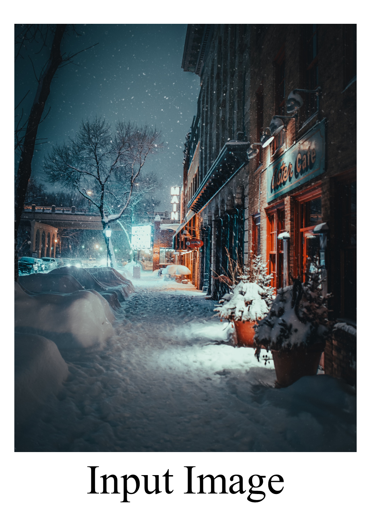

|
Hyeongmin Lee I'm a master student at POSTECH Computer Graphics Lab.. |

|
ResearchI'm interested in computer graphics, deep learning, and image processing. |
|

|
CLIPtone: Unsupervised Learning for Text-based Image Tone Adjustment
Hyeongmin Lee*, Kyoungkook Kang*, Jungseul Ok, Sunghyun Cho CVPR, 2024 project page / arXiv Soon... |
 
|
UGPNet: Universal Generative Prior for Image Restoration
Hwayoon Lee, Kyoungkook Kang, Hyeongmin Lee, Seung-Hwan Baek, Sunghyun Cho WACV, 2024 arXiv / Github Soon.. |
|
Feel free to steal this website's source code. Do not scrape the HTML from this page itself, as it includes analytics tags that you do not want on your own website — use the github code instead. Also, consider using Leonid Keselman's Jekyll fork of this page. |